这是关于威严满满的，红魔馆的主人，蕾米莉亚·斯卡雷特的故事。
Chaosls 投稿
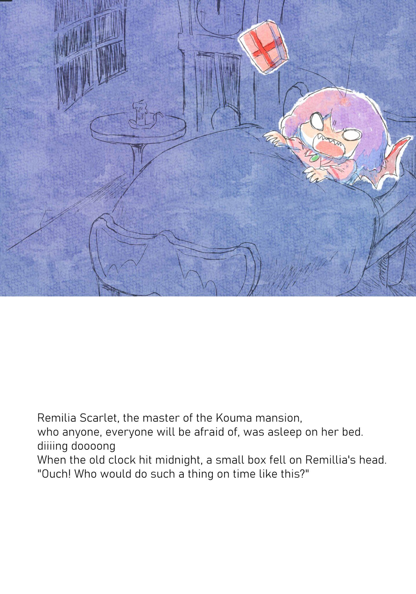
任何人，任何人都会害怕的红魔馆的主人，蕾米莉亚·斯卡雷特正睡在她的床上。
“滴——滴——咚——”
当旧钟敲响午夜，一个小盒子落在了蕾米莉亚的头上。
“哎哟！谁会在这种时候做这种事？”
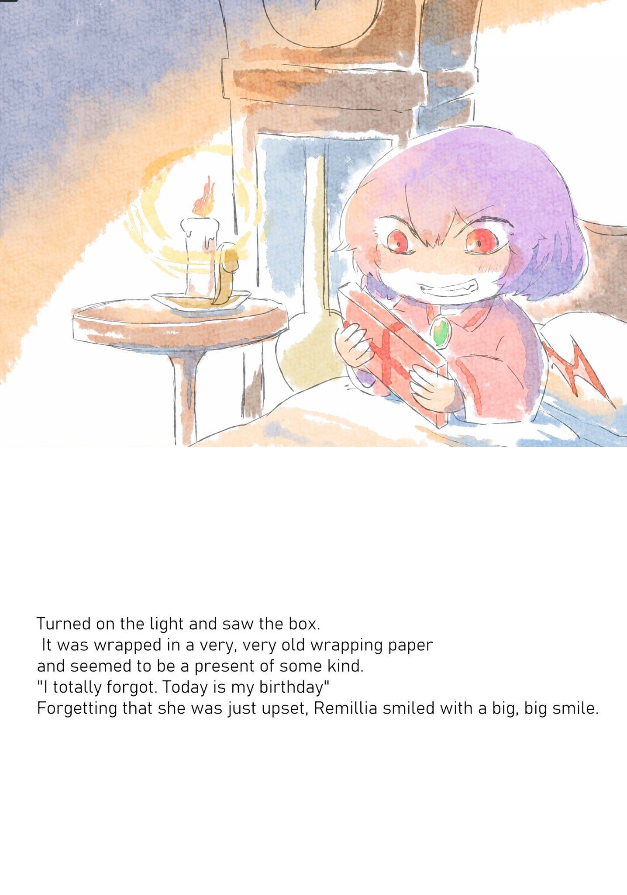
她打开灯，看到了那个盒子。
它被包裹在一张非常非常旧的包装纸里，就像一个礼物。
“我完全忘了，今天是我的生日。”
蕾米莉亚忘记了刚才的心烦意乱，脸上露出了大大的微笑。
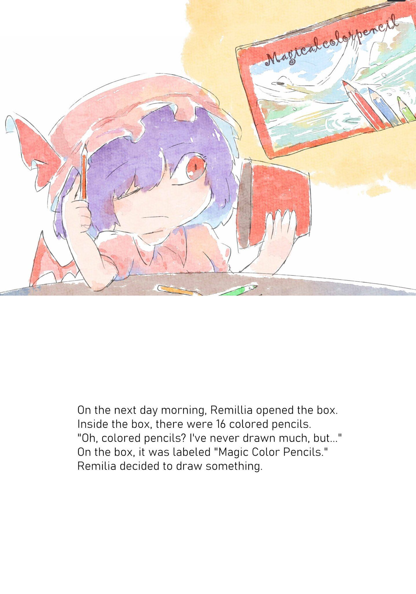
第二天早上，蕾米莉亚打开了盒子，里面有16支彩色铅笔。
“哦，彩色铅笔吗？我从来没画过多少东西，但是……”
盒子上写着：“神奇彩色铅笔”。
蕾米莉亚决定画点什么。
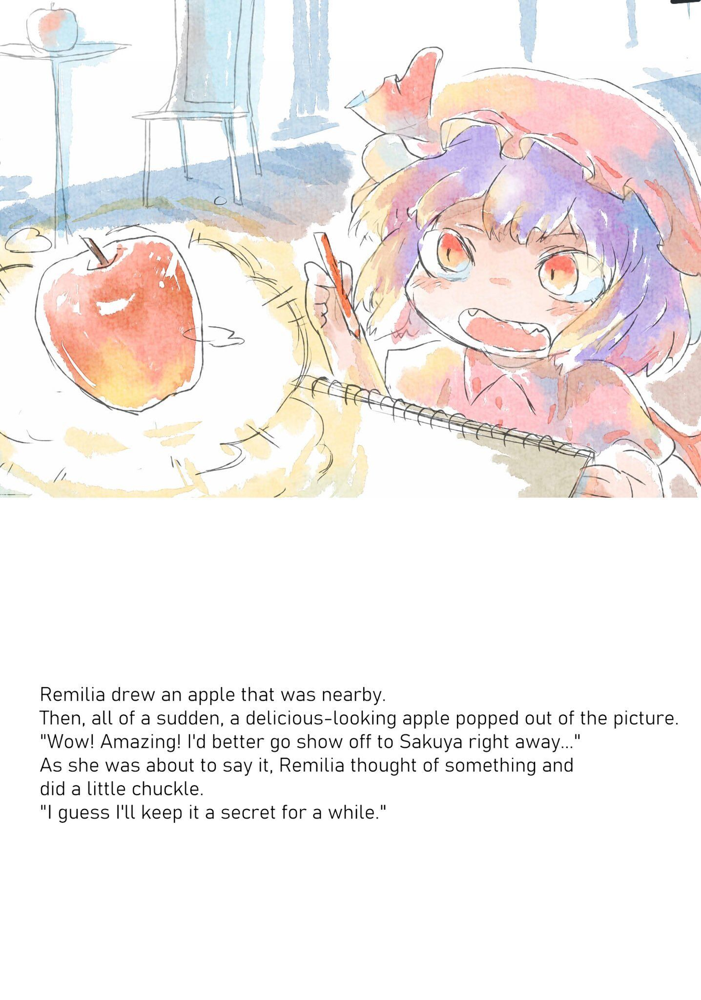
蕾米莉亚画了一个旁边的苹果。 然后，一个看起来很美味的苹果突然从画中跳了出来。
“哇!多么神奇!我最好马上去找咲夜炫耀一下……”
说到一半，蕾米莉亚想起了什么，然后微微地笑了一下。
“我想我会把这个秘密保守一段时间。”
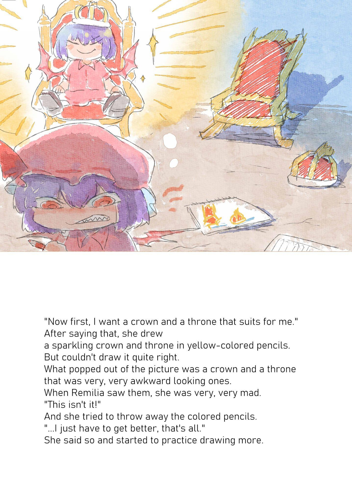
“现在，首先，我要一个配得上我的皇冠和宝座。”
说完，她开始用黄色铅笔画出闪闪发光的皇冠和宝座。
但是蕾米莉亚画得有点不太对。
从画里跳出来的王冠和王座看起来非常非常粗糙。
当蕾米莉亚看到它们时，她也非常非常生气。
“这不是我想要的！“
她想把彩色铅笔扔了。
“…我只是需要变得更好，仅此而已。”
这么说着，她开始更多地练习画画。
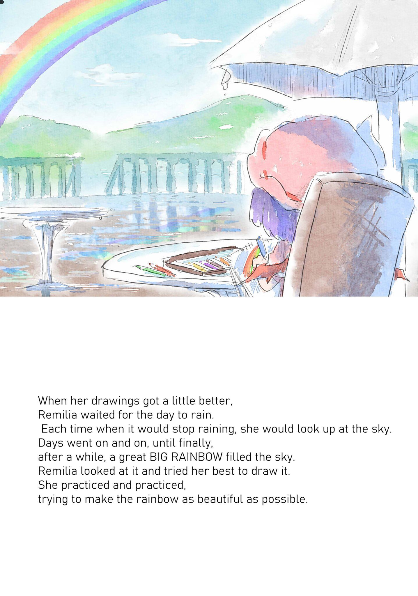
当她画得好了一些的时候，蕾米莉亚开始等待下雨的那天。
每次雨停了，她都会抬头看看天空。
日子一天天过去，终于，在一次雨过天晴后，一道巨大的彩虹横跨天空。
蕾米莉亚看着它，尽她最大的努力把它画出来。
她画了又画， 努力地想要让画上的彩虹尽可能的美丽
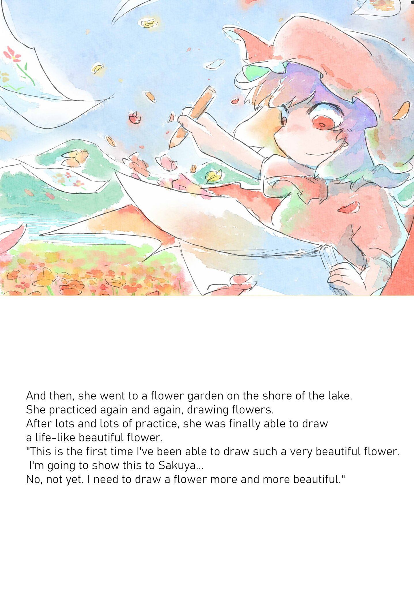
然后，她去了湖边的花园。
她一遍又一遍地练习画花朵。
经过大量的练习，她终于能够画出一朵栩栩如生的美丽花儿了。
“这是我第一次能画出这么漂亮的花。我要把这个给咲夜看…. 不，还不够。我要画一朵更加，更加漂亮的花。”
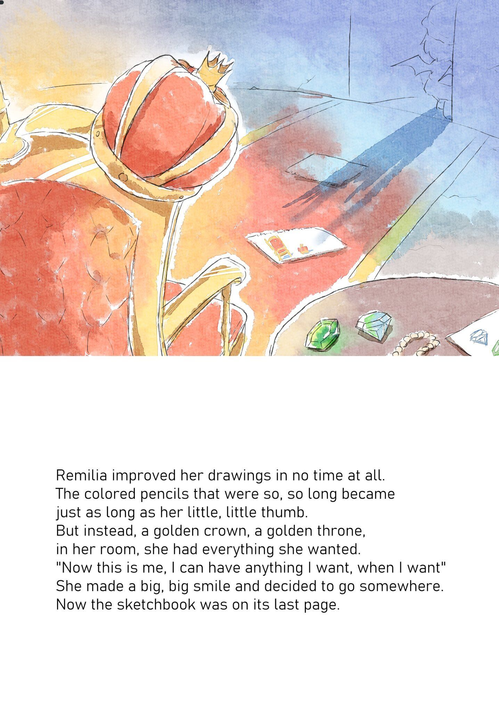
蕾米莉亚的绘画进步地很快。
原来那么长、那么长的彩色铅笔，现在变得只和她的小拇指一样短了。
这段距离换来了她房间里的一个金色的皇冠，和一个金色的王座，以及她几乎想要的一切。
“现在，这就是我！只要我想，我就能得到我想要的一切。”
她笑了笑，然后决定去一个地方。
现在，她的速写本已经画到了最后一页。
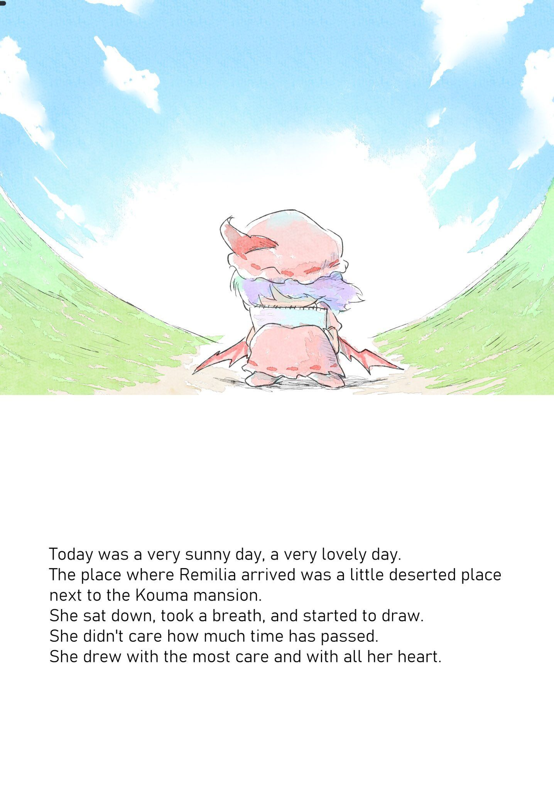
今天是一个非常晴朗的日子，是非常可爱的一天。
蕾米莉亚来到了红魔馆旁边的一个空旷寂寥的地方。
她坐下来，深吸了一口气，然后开始画画。
她不在乎过去了多久。
她画得很用心，很用心。
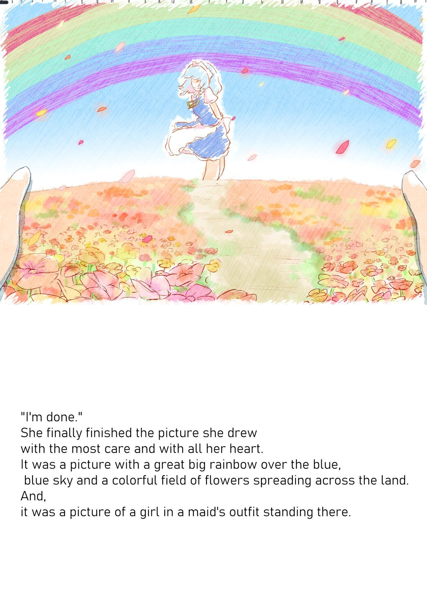
“我做到了！”
她终于画好了这幅画：以她最大的努力和全部的心血。
这是一幅有着一道划过蓝天的巨大彩虹的， 由蓝天和遍布大地的五彩缤纷的鲜花组成的画。
而且，在这幅画里，一个穿着女仆装的女孩正站在那。
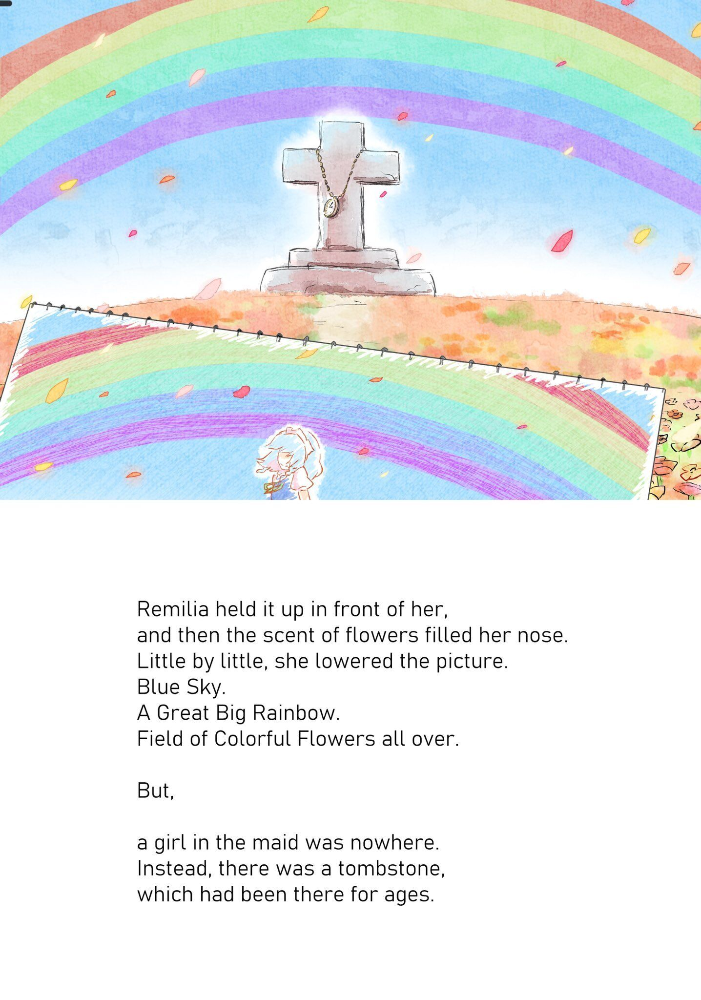
蕾米莉亚把它举在面前，然后，她闻到了花香。
慢慢地，她把画放下来了。
蓝色的天空。
一个很大的彩虹。
遍布大地的五彩缤纷的花。
但是，本应该在那里的，穿着女仆装的女孩没有出现。
取而代之的，是一个已经存在了很多年的墓碑。
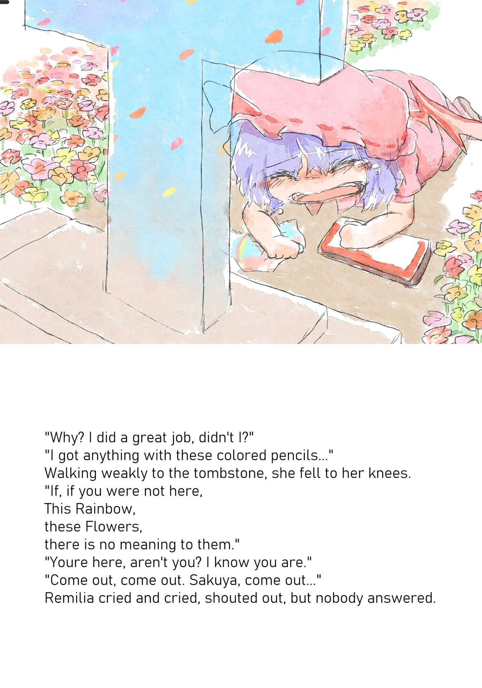
“为什么？我明明已经做得很好了，难道不是吗？“
“我用这些彩色铅笔得到了任何我想要的东西…”
她蹒跚地走到墓碑前，跪了下来，哭泣着，“如果，如果你不在这里，这彩虹，这些花，它们没有任何意义。”
“你在这儿，是吗？我知道你在这里。”
“出来，出来。咲夜，出来…”
蕾米莉亚不停地哭啊哭，喊啊喊，可是，没有人回答。
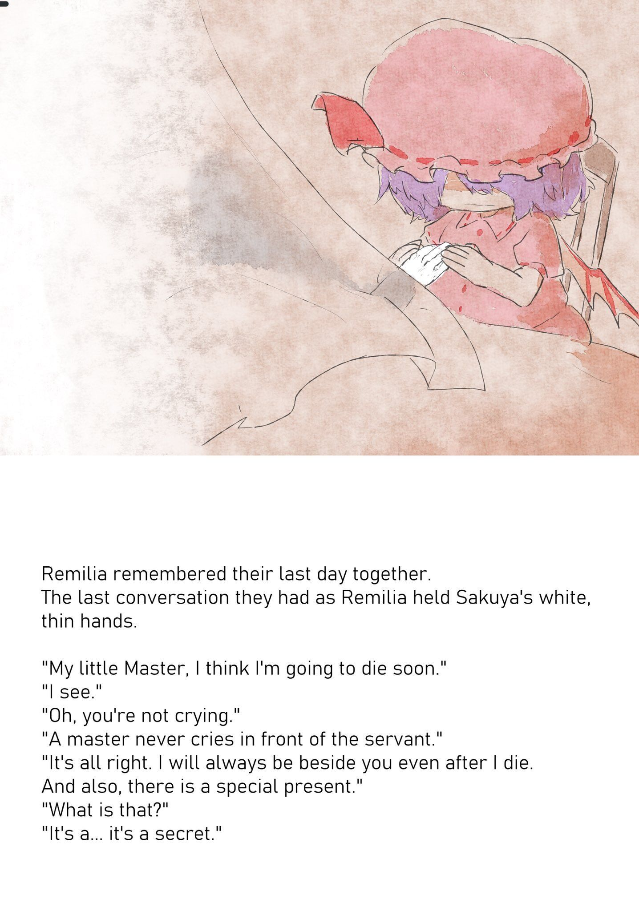
蕾米莉亚想起了她们在一起的最后一天。
她们最后一次谈话时，蕾米莉亚握着咲夜苍白纤弱的双手。
“我的小主人，我想，我快要死了。”
“我明白。”
“哦，您没有哭。”
“主人从不在仆人面前哭。”
“那就好。即使我死了，我也会一直陪在您身边的。还有，我这里准备了一份特别的礼物。”
“什么东西？“
“是一个…一个秘密。”
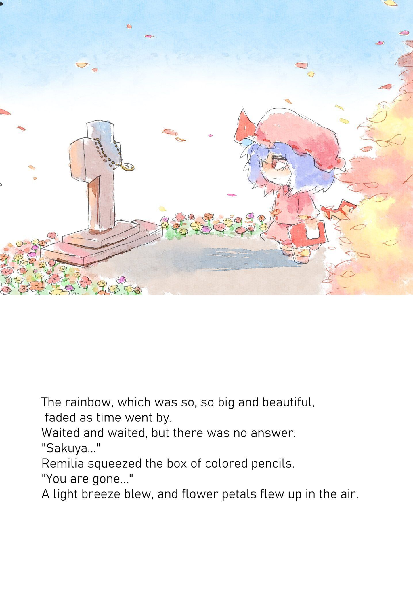
彩虹，那么大，那么漂亮，但正在随着时间的流逝而褪去色彩。
蕾米莉亚等啊等，可是没有人回答。
“咲夜…”
蕾米莉亚抓紧了那盒彩色铅笔。
“你确实走了…”
一阵微风吹来，花瓣在空中飞舞。
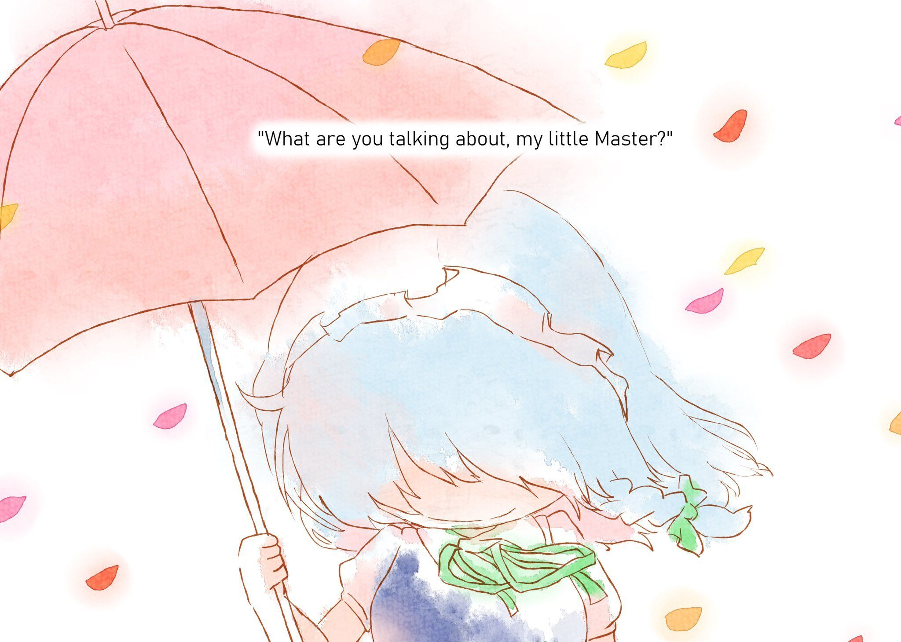
“您在说什么，我的小主人？”
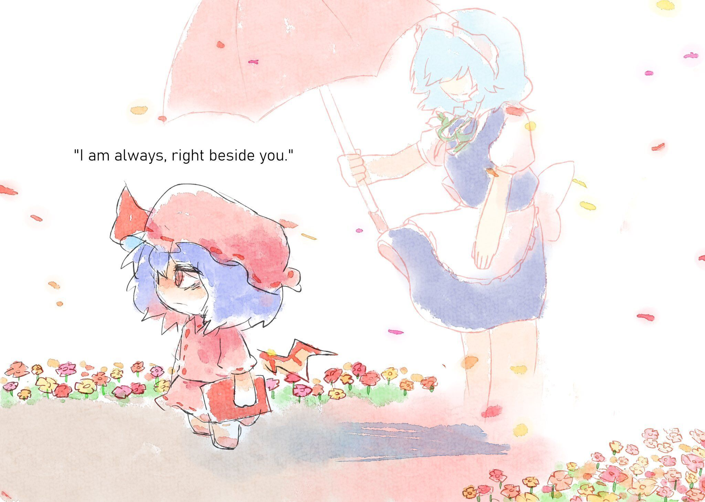
“我会永远，永远陪在您身边。”
以上故事来自于qq群转发
是的！我永远爱吃刀子！
最后，即使钉在腐朽的棺材里，我也要大声喊出来：蕾米莉亚是我老婆！
chaosls